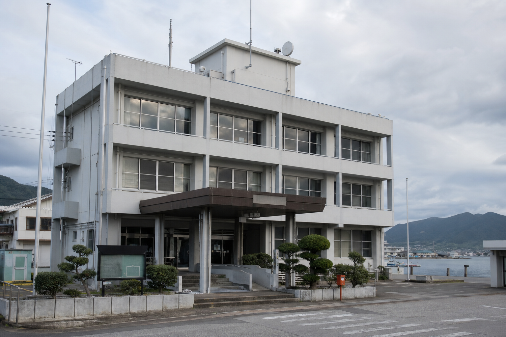

公開資料
| 資料番号 | 名称 | 状態 |
|---|---|---|
| H18-0918-A | 港湾整備記念式典 実施報告 | 公開 |
| H18-0918-B | 来賓名簿 | 一部非公開 |
| H18-0918-C | 安全確認記録 | 欠番 |
海と記録の町

保存日: 2014-03-31
町民生活と観光導線の安全を守るため、港湾周辺施設の整備を進めています。
| 資料番号 | 名称 | 状態 |
|---|---|---|
| H18-0918-A | 港湾整備記念式典 実施報告 | 公開 |
| H18-0918-B | 来賓名簿 | 一部非公開 |
| H18-0918-C | 安全確認記録 | 欠番 |
窓口受付は平日8時30分から17時15分までです。郵送請求は総務課住民係で受け付けています。
聞き逃した放送は、翌営業日まで電話音声案内で確認できます。港湾地区の気象警報は別系統です。
第3水曜日は資源ごみです。未明港東町内会のみ、収集場所が港湾広場西側へ変更されています。
中央公民館、海浜運動場、旧資料館講座室は予約状況により利用できない日があります。
ホームページ移行に伴う旧ページ保存のお知らせ
冬季の水道管凍結にご注意ください
海浜清掃ボランティアを募集しています
町道三号線の舗装修繕について
郷土資料館の展示替えに伴う臨時休館
平成18年第3回定例会では、港湾照明設備の仮設使用、旧資料館第三展示室の管理、 および未明港東側道路の夜間通行止めについて質疑が行われました。
| 会議日 | 件名 | 担当 |
|---|---|---|
| 2006年9月08日 | 港湾広場仮設照明の使用許可 | 建設課 |
| 2006年9月12日 | 郷土資料館第三展示室の閉室 | 教育委員会 |
| 2006年9月14日 | 未明港東側道路の通行制限 | 防災交通係 |